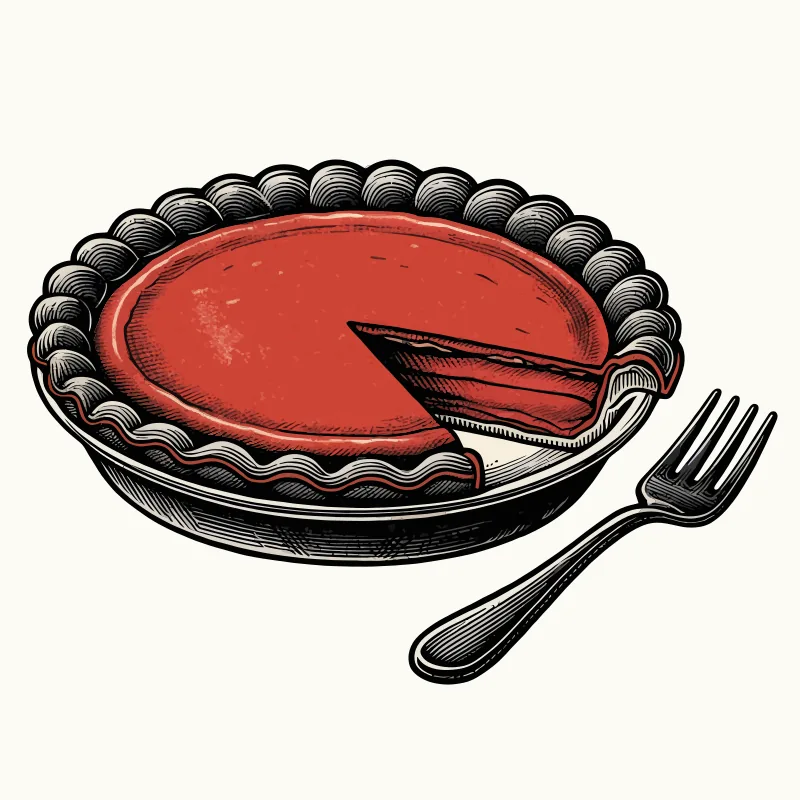
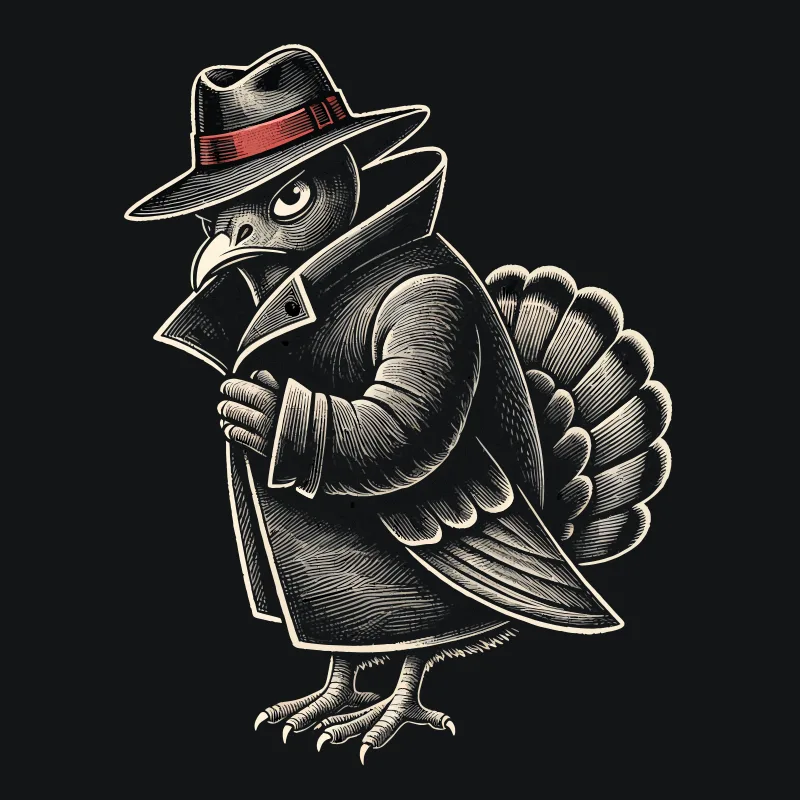

Thanksgiving host guide
How to survive Thanksgiving when someone at the table has a theory about the cranberry sauce. Keep it silly, keep it kind, and give people a card so they are laughing at a prompt instead of at each other.


What’s in the $6.99 kit
- 24 conversation cards
- 12 place cards
- Turkey Truth Bingo
★★★★★
“Super friendly and loved my package.”
Lilibeth, Etsy review, Oct 2026
★★★★★
“Super cool packet! We’re having a conspiracy party and it had everything we needed! There is also other downloads on the website.”
Erica, Etsy review, Jun 2026
The printable party kit is $12.99. Code LEAKED20 works on Ko-fi and on Etsy.
The uncle protocol
Every table has one person who arrives with a briefing. You do not have to win. You have to feed people and get to pie.
- Seat the theorist between the rolls and the gravy. A full plate is a shorter speech.
- Hand out a prompt, not a debate. The free Thanksgiving cards are already written. Guests read the card. The card takes the heat.
- Use an exit line. “The pies need a witness.” Stand up. The moment ends.
- Praise the cook in public. A specific compliment (“the onions in this are doing crimes”) resets the room.
- Save the wildest card for after dessert, or skip it. Full plates forgive more than empty ones.
Table games
- Free card draw. Print the Thanksgiving card PDF. One card, one voice, then pass it on.
- Ten-second thanks. Name one food you are glad exists. Timer is a phone. No speeches.
- Two truths and a leftover. Two real dishes from tonight, one invented. The table guesses the fiction.
- Place-card aliases. Kids write a food title on a folded card: “Agent Mashed Potato.” Use those names until pie.
Conversation starters
Weird, not personal. If a question needs a team jersey, skip it.
- Which side dish is clearly a cover story?
- If the gravy had a security clearance, what would it be allowed to see?
- What pie flavor is an inside job, and who benefits?
- Which vegetable is watching us, and is it the green beans?
- What would the turkey put on its own thank-you list?
- Name a kitchen tool that is overqualified for this job.
Kids at the table? The $6.99 set is the family-safe version: conversation cards, place cards, and Turkey Truth Bingo, with the politics left out.
The printables
FAQ
How do I host Thanksgiving without a debate?
Give the table a silly job. Draw a free prompt card, set a timer, and use an exit line like “the pies need a witness.” The joke stays on the food, not on a person.
What table games work for mixed ages?
A 10-second gratitude round that must name a food, two truths and a leftover, and the free Thanksgiving card set. Skip anything that needs a winner to feel superior.
Is there a free Thanksgiving printable?
Yes. The free Thanksgiving cards are a US Letter PDF. The $6.99 Etsy set adds place cards and Turkey Truth Bingo with no politics.
What is in the $6.99 Thanksgiving card kit?
Conversation cards, place cards, and Turkey Truth Bingo. It is the family-safe version of the free prompt set. See it on Etsy.